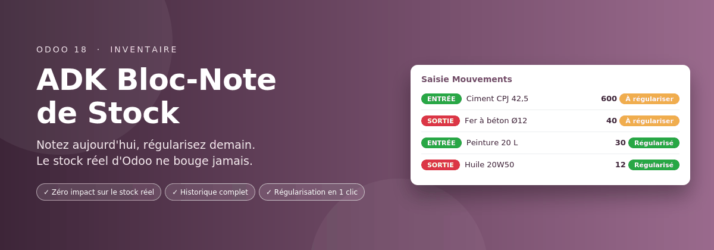
ADK Bloc-Note de Stock est le carnet de bord de l'économe et du gestionnaire de stock. Il garde l'historique de toutes les entrées et sorties au moment où elles se produisent, sans jamais modifier le stock réel d'Odoo, puis aide à régulariser Inventaire, Achats et Facturation quand les documents officiels sont validés.
0 écriture dans le stock réel | 100 % des mouvements conservés et numérotés | 1 clic pour régulariser plusieurs lignes |
Achats, livraisons, réceptions et factures sont souvent validés avec du retard, alors que la marchandise bouge chaque jour.
Sans le Bloc-Note
| Avec le Bloc-Note
|
Noter, suivre, puis régulariser.
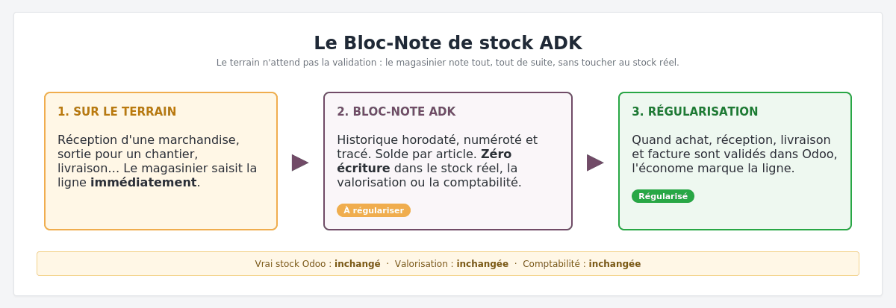 |
Un outil pensé pour l'économe et le gestionnaire de stock.
Saisie rapide Une ligne par mouvement, saisie directement dans la liste, comme sur un cahier : date, article, quantité, tiers et document d'origine. | Types de mouvement configurables Réception fournisseur, livraison client, casse, retour… Vous créez et modifiez vos propres types dans Configuration. Chaque type est une entrée ou une sortie. |
Statuts configurables Ajoutez vos étapes, par exemple « En attente de facture ». Chaque statut indique s'il compte comme « À régulariser » ou « Régularisé ». | Statut modifiable en un clic Sur la fiche du mouvement, la barre de statut est cliquable. Passer à un statut « Régularisé » verrouille la ligne et note la date et l'auteur. |
Tiers : copie et création à la volée Comme pour les articles, un bouton copie vos clients et fournisseurs Odoo. Un tiers absent se crée directement pendant la saisie. | Numéro automatique Chaque mouvement reçoit un numéro unique, par exemple BN/2026/00031. |
Sorties avant réception acceptées Une sortie peut être notée avant la réception officielle. Le solde devient négatif et la ligne attend simplement sa régularisation. | Lignes verrouillables Une ligne verrouillée ne peut plus être modifiée. Une ligne régularisée est verrouillée automatiquement. |
Historique et analyse Chaque changement est enregistré avec son auteur et sa date. Un tableau croisé et un graphique mensuel montrent les flux. | Journal PDF à signer Synthèse par article, détail des mouvements et zones de signature du magasinier, de l'économe et de la direction. |
Captures réelles réalisées dans Odoo 18, avec des données de démonstration fictives.
| 1 | Saisie rapide des mouvements |
Le magasinier note l'entrée ou la sortie au moment où elle se produit : date, article, sens, type de mouvement, quantité, tiers et document d'origine. Les lignes déjà régularisées sont grisées et protégées.
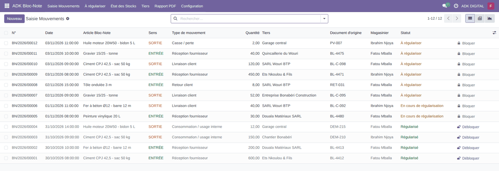 |
| 2 | Un tiers absent ? Créez-le sur place |
Dans la colonne Tiers, tapez le nom : si le client ou le fournisseur n'existe pas encore, la liste propose « Créer ». Le choix du type de mouvement se limite aux types qui correspondent au sens (entrée ou sortie).
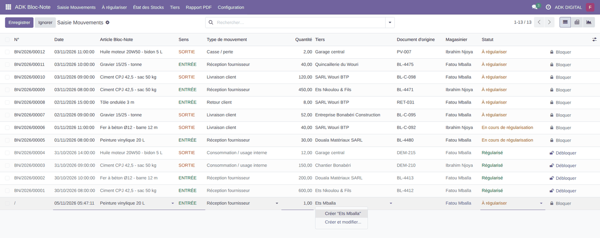 |
| 3 | Le tableau « À régulariser » |
L'économe coche les lignes dont les documents sont validés dans Odoo, puis clique sur « Marquer comme régularisé ». La date et la personne sont conservées.
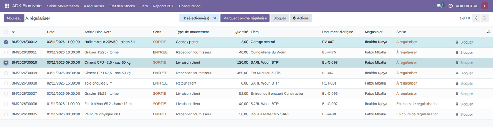 |
| 4 | La fiche d'un mouvement : le statut se change en un clic |
La barre de statut est cliquable. Les statuts intermédiaires comptent comme « À régulariser ».
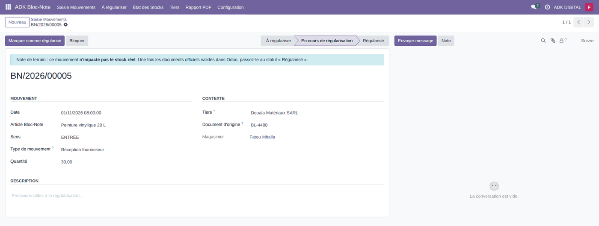 |
| 5 | Après un clic sur « Régularisé » |
La ligne est verrouillée automatiquement, la date et l'auteur sont enregistrés, et l'historique à droite garde la trace du changement. Seul un responsable de stock peut débloquer la ligne.
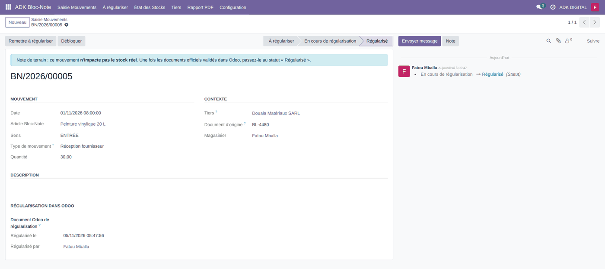 |
| 6 | L'état des stocks du Bloc-Note |
Pour chaque article : entrées, sorties, solde du carnet et solde restant à régulariser. Un solde négatif apparaît en rouge. Le bouton de synchronisation copie vos nouveaux articles Odoo.
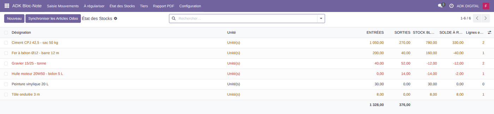 |
| 7 | La fiche d'un article |
Les totaux du carnet, le solde à régulariser et, à titre indicatif, le stock réel d'Odoo en lecture seule. Le bouton « Mouvements » ouvre l'historique de l'article.
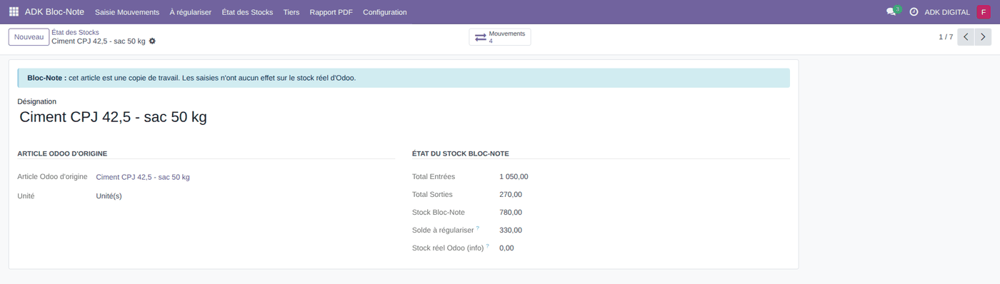 |
| 8 | Les tiers : clients et fournisseurs |
Le bouton « Synchroniser les Tiers Odoo » copie vos contacts, sans jamais les modifier. Pour chaque tiers : nombre de mouvements et lignes à régulariser.
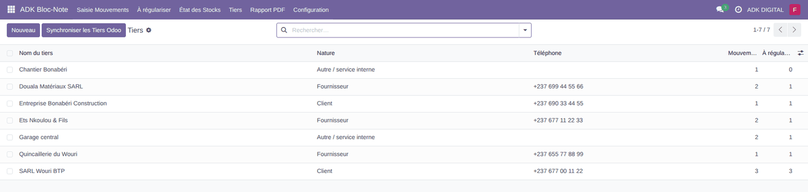 |
| 9 | Configuration : vos types de mouvement |
Menu Configuration › Types de mouvement. Ajoutez, renommez, réordonnez ou archivez vos types, chacun lié à une entrée ou à une sortie.
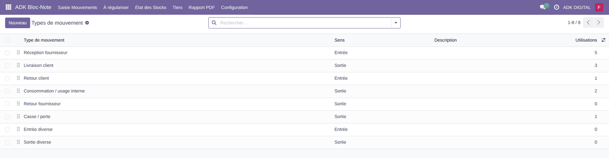 |
| 10 | Configuration : vos statuts |
Menu Configuration › Statuts. Créez des étapes intermédiaires et indiquez si chacune compte comme « À régulariser » ou « Régularisé ».
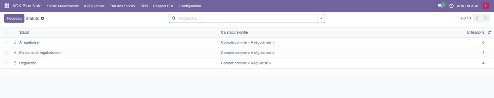 |
| 11 | Analyse : tableau croisé |
Les quantités entrées et sorties par article, en un coup d'œil.
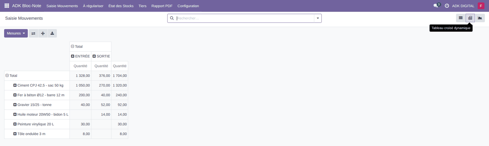 |
| 12 | Analyse : graphique mensuel |
L'évolution des entrées et des sorties mois par mois.
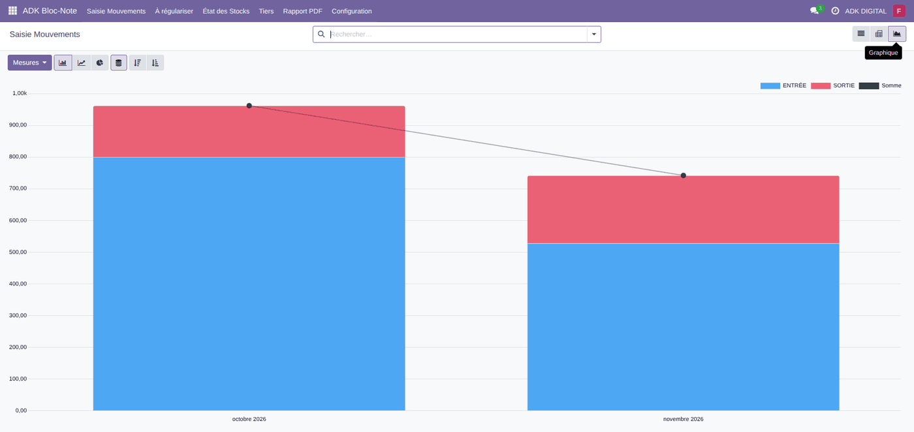 |
| 13 | Le rapport : choisir la période |
Période, statut (tout, à régulariser, régularisé) et type de mouvement.
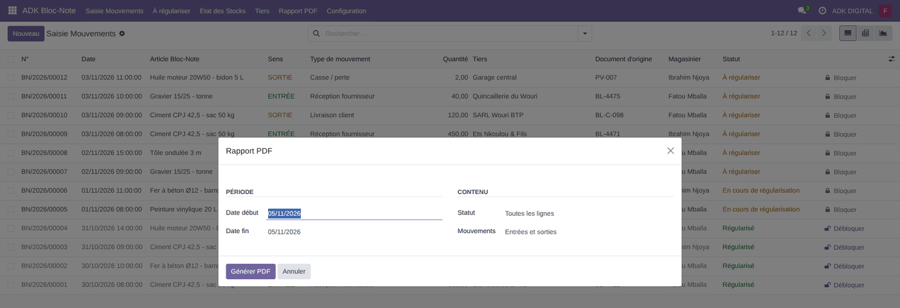 |
| 14 | Le journal PDF à signer, page 1 |
Synthèse par article, puis début du journal détaillé. Format A4 paysage.
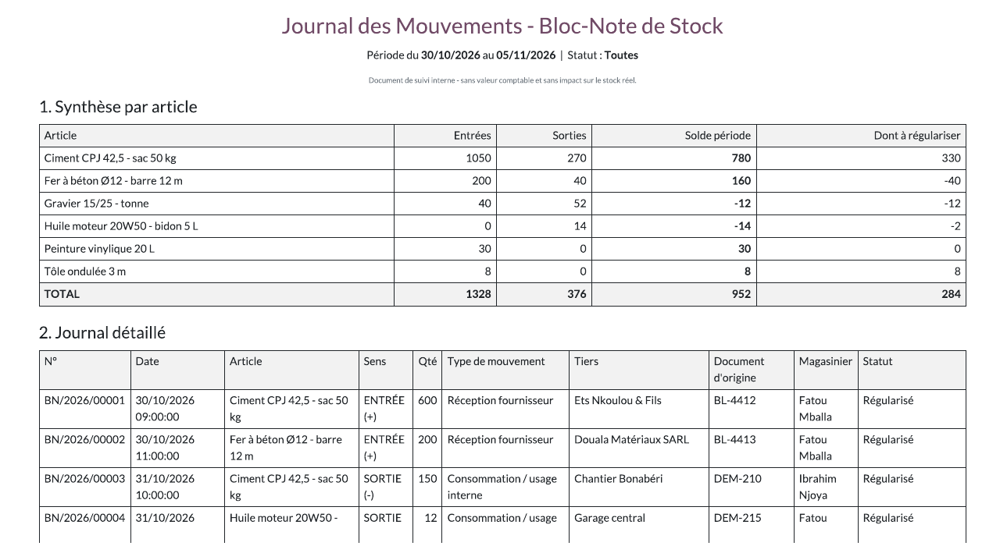 |
| 15 | Le journal PDF à signer, page 2 |
Fin du journal et zones de signature du magasinier, de l'économe et de la direction.
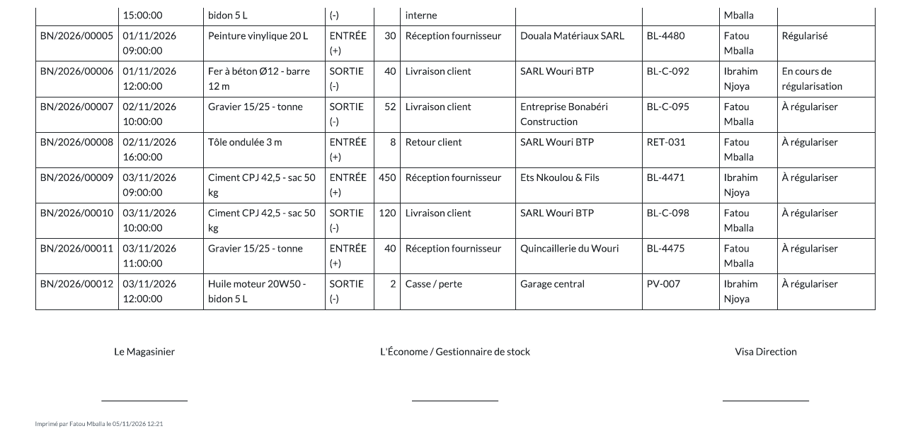 |
| ||
| ||
| ||
| ||
| ||
|
Ils ne se remplacent pas : le Bloc-Note prépare, Odoo officialise.
| Besoin | Odoo standard | Avec ADK Bloc-Note |
|---|---|---|
| Noter un mouvement avant la validation des documents | Impossible : tout passe par un transfert validé, qui modifie le stock réel. | Saisie immédiate, sans toucher au stock réel. |
| Sortie constatée avant la réception officielle | Stock négatif bloqué ou valorisation faussée. | Autorisé : la ligne reste « À régulariser ». |
| Historique fidèle du terrain | Reconstitué après coup, à partir de documents validés en retard. | Journal daté et numéroté, avec l'auteur et les modifications. |
| Savoir ce qui reste à régulariser | Aucun suivi dédié. | Menu « À régulariser » et statut sur chaque ligne. |
| Rapport signé pour la direction | À construire sous Excel. | Journal PDF avec synthèse et zones de signature. |
| Risque pour le stock réel | Une mauvaise saisie fausse le stock, la valorisation et la comptabilité. | Aucun : le module n'écrit jamais dans le stock réel. |
| Magasinier | Saisit les mouvements, crée les tiers, les verrouille et les marque comme régularisés. Il consulte les types et les statuts. |
| Responsable de stock | Peut en plus gérer la Configuration (types et statuts), supprimer une ligne non régularisée, débloquer une ligne régularisée ou la remettre « À régulariser ». |
| Historique | Une ligne verrouillée ou régularisée ne peut jamais être supprimée. |
Auteur et support Kambeu Henang Ange Duval Une question, une idée d'amélioration ou un besoin spécifique ? Écrivez-moi à : duvalkambeu61@gmail.com |
Kambeu Henang Ange Duval · Odoo 18 · LGPL-3